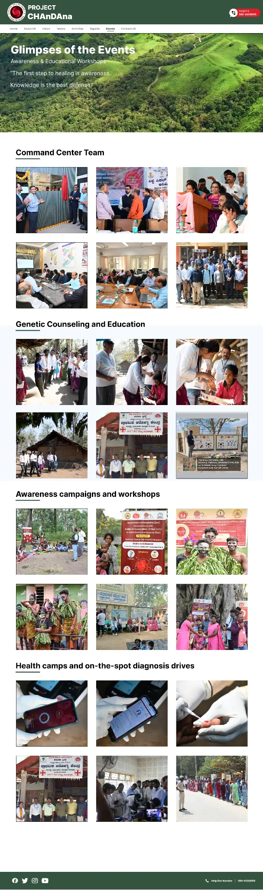
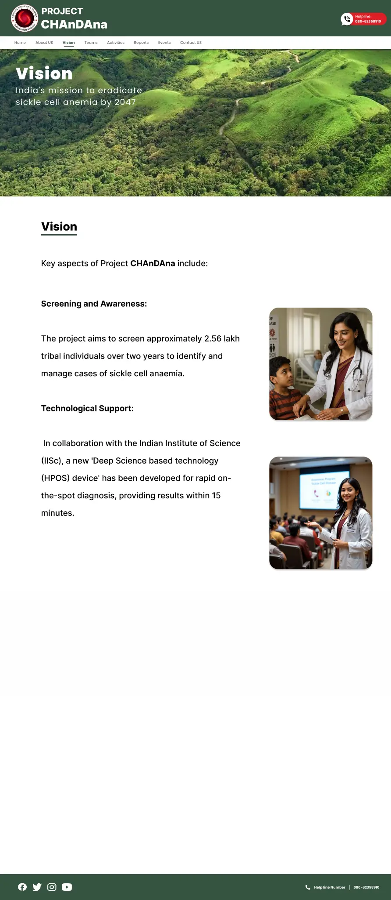

About Project CHAnDAnA
Our Mission
Project CHAnDAnA (Comprehensive Healthcare Advancement for Neglected Disease Awareness) is a pioneering initiative focused on addressing Sickle Cell Anemia in Karnataka, particularly in the districts of Mysore, Chamarajanagar, and Kodagu.
Our mission is to improve healthcare outcomes for individuals affected by Sickle Cell Anemia through early detection, comprehensive treatment, and community education.
Our Journey (Chronological Order)
Project Inception
January 2022
Project CHAnDAnA was officially launched as a collaborative initiative between the National Health Mission, Indian Institute of Science, Government of Karnataka, and Indian Oil Corporation.
Baseline Studies
June 2022
Comprehensive baseline studies were conducted across the three target districts to understand the prevalence of Sickle Cell Anemia and identify high-risk communities.
Healthcare Worker Training
December 2022
Training programs were initiated for local healthcare workers to improve diagnosis and management of Sickle Cell Anemia in rural settings.
Community Outreach
March 2023
Large-scale community outreach programs were launched to raise awareness about Sickle Cell Anemia and promote early screening.
Research Collaboration
September 2023

Research partnerships were established with national and international institutions to develop innovative approaches to Sickle Cell Anemia management.
Expansion Phase
January 2024
Project CHAnDAnA expanded its scope to include additional vulnerable communities and implement comprehensive healthcare services.
Our Approach
Project CHAnDAnA takes a holistic approach to addressing Sickle Cell Anemia through:
Early Detection
Implementing screening programs in vulnerable communities to identify individuals with Sickle Cell Anemia at an early stage.
Treatment Access
Ensuring access to quality healthcare services and treatments for affected individuals.
Community Education
Raising awareness about Sickle Cell Anemia through educational programs and community outreach.
Our Partners
Project CHAnDAnA is a collaborative effort between government agencies, academic institutions, and corporate partners: